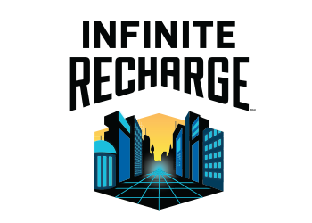

<div id="content">
  <main id="mainFirst">
    <table>
      <thead>
        <th colspan="2">
          <h1>F.I.R.S.T.</h1>
        </th>
      </thead>
      <tbody>
        <tr>
          <td>
            <h2>What is FIRST?</h2>
            <p>FIRST Robotics is an organization that was founded in 1989 by Dean Kamen. The mission of FIRST is to,
              "...inspire young people to be science and technology leaders, by engaging them in exciting mentor-based
              programs that build science, engineering and technology skills, that inspire innovation, and that foster
              well-rounded life capabilities including self-confidence, communication, and leadership..." <a
                target="_blank" href="http://www.firstinspires.org/">(FIRST website)</a>. It offers opportunities for
              scholarships and promotes good sportsmanship and cooperation.</p>
            <h2>What does FIRST stand for?</h2>
            <ul>
              <li>
                For
              </li>
              <li>
                Inspiration and
              </li>
              <li>
                Recognition of
              </li>
              <li>
                Science and
              </li>
              <li>
                Technology
              </li>
            </ul>
            <h2>What is 'Gracious Professionalism' and 'Coopertition'?</h2>
            <p>Gracious Professionalism is the FIRST idea that combined the notions of mutual gain and fierce
              competition in a relationship that benefits both the team and the community. "Knowledge, competition, and
              empathy are comfortably blended" in the theory of Gracious Professionalism.</p>
            <p>Coopertition is showing kindness and dignity in the face of competition. It involves learning from your
              team. Teaching your friends. Learning from mentors. Coopertition is truly the essence of what FIRST is all
              about.</p>
            <h2>How does FIRST impact students?</h2>
            <p>When compared with students not involved in FIRST, FIRST students are:</p>
            <ul>
              <li>
                More than 3 times as likely to major specifically in engineering.
              </li>
              <li>
                Roughly 10 times as likely to have had an apprenticeship, internship, or co-op job in their freshman
                year.
              </li>
              <li>
                Significantly more likely to expect to achieve a post graduate degree.
              </li>
              <li>
                More than twice as likely to expect to pursue a career in science and technology.
              </li>
              <li>
                Nearly 4 times as likely to expect to pursue a career specifically in engineering.
              </li>
              <li>
                More than twice as likely to volunteer in their communities.
              </li>
            </ul>
            <p>FIRST really does help students achieve a future beneficial to them!</p>
          </td>
          <td>
            <a target="_blank" href="http://www.firstinspires.org/"></a>
            <a target="_blank" href="http://www.firstinspires.org/robotics/frc"></a>
          </td>
        </tr>
        <tr>
          <td>
            <h2>2020 Game <strong>FIRST&reg; INFINITE RECHARGE</strong></h2>
            <p> In INFINITE RECHARGE, two alliances work to protect FIRST&reg;
              City from approaching asteroids caused
              by a distant space skirmish. Each Alliance, along with their trusty droids, race to collect and score
              Power
              Cells in order to energize their Shield Generator for maximum protection. To activate stages of the Shield
              Generator, droids manipulate their Control Panels after scoring a specific number of Power Cells. Near
              the end of the match, droids race to their Rendezvous Point to get their Shield Generator operational in
              order to protect the city!
            </p>
            <p>
              During the 15 second Autonomous Period, droids follow pre-programmed instructions. Alliances score
              points by:
            </p>
            <ol style="text-align: left;">
              <li>Scoring Power Cells in the Power Port</li>
              <li>Moving from the Initiation Line</li>
            </ol>
            <p>
              In the final 2 minutes and 15 seconds of the match, drivers take control of the droids. Alliances scores
              points by:
            </p>
            <ol style="text-align: left;">
              <li>Continue to score Power Cells in the Power Port</li>
              <li>Completing Rotation Control</li>
              <li>Completing Position Control</li>
              <li>Hanging from the Generator Switch</li>
              <li>Getting the Generator Switch to the level position</li>
            </ol>
            <p>The Alliance with the highest score at the end of the Match wins</p>
          </td>
          <td>
            <a target="_blank" href="http://www.firstinspires.org/node/3651"></a>
          </td>
        </tr>
      </tbody>
    </table>
  </main>
</div>
